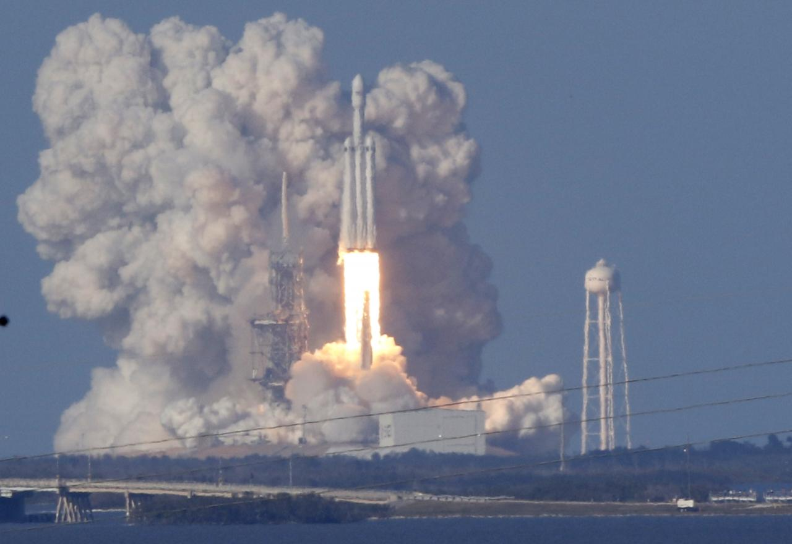

“If one can figure out how to effectively reuse rockets just like airplanes, the cost of access to space will be reduced by as much as a factor of a hundred. A fully reusable vehicle has never been done before. That really is the fundamental breakthrough needed to revolutionize access to space.”
--Elon Musk
SpaceX believes a fully and rapidly reusable rocket is the pivotal breakthrough needed to substantially reduce the cost of space access. The majority of the launch cost comes from building the rocket, which flies only once. Compare that to a commercial airliner – each new plane costs about the same as Falcon 9, but can fly multiple times per day, and conduct tens of thousands of flights over its lifetime. Following the commercial model, a rapidly reusable space launch vehicle could reduce the cost of traveling to space by a hundredfold.
While most rockets are designed to burn up on reentry, SpaceX rockets can not only withstand reentry, but can also successfuly land back on Earth and refly again.
World’s First Orbital-Class Rocket Reflight
In March 2017, SpaceX achieved the world’s first reflight of an orbital class rocket. SpaceX’s Falcon 9 rocket launched a geosynchronous communications satellite on March 30, 2017, from Launch Complex 39A (LC-39A) at NASA's Kennedy Space Center in Florida. The first stage for the mission previously supported a space station cargo resupply launch for NASA in April 2016. Following stage separation, the first stage successfully returned to Earth for a second time, landing on a drone ship stationed in the Atlantic ocean. This successful reflight represents a historic milestone on the road to full and rapid rocket reusability.
Ocean Landings
Prior to successfully landing a Falcon 9 first stage, SpaceX had twice reentered a Falcon 9 first stage from space and landed it in the ocean. From there, SpaceX moved on to attempt using the drone ship as a landing platform during January and April 2015 missions. While the rocket did not stick the landing on these first two attempts, SpaceX gathered important data each time that would ultimately lead to a successful landing.
Grasshopper and F9R Test Programs
SpaceX’s initial reusability tests using the Grasshopper and F9R test vehicles took place in 2012–2014 at SpaceX’s test facility in McGregor, Texas. The Grasshopper Vertical Take Off, Vertical Landing (VTVL) vehicle was essentially a Falcon 9 first stage with one Merlin 1D engine and attached steel landing legs. In 2012–2013, Grasshopper completed a series of eight flight tests with landings, the highest reaching 744 meters high. Following the retirement of Grasshopper, SpaceX began testing the F9R development vehicle, which had three Merlin 1D engines for additional thrust. F9R completed successively higher tests in 2014 topping out with a 1000m test using steerable grid fins. These overland tests provided invaluable information for future flight testing during orbital missions, ultimately leading to the first rocket landing in 2015.